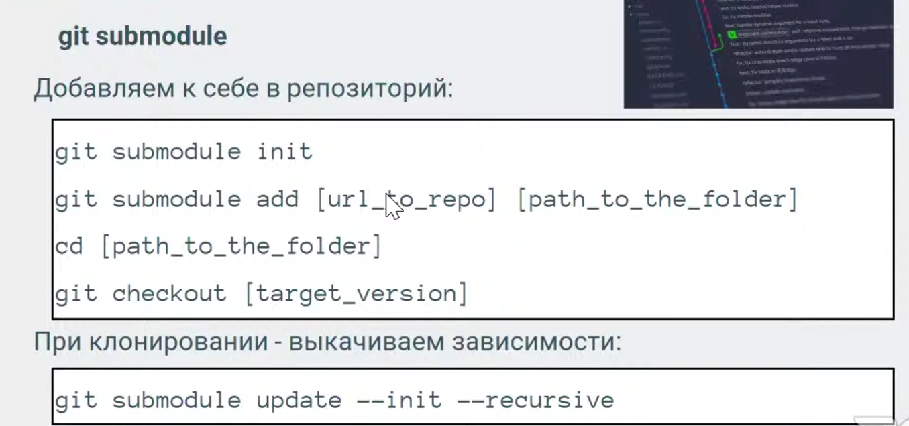

Тесты с GoogleTest
Тест-кейсы, EXPECT и ASSERT, запуск через CTest.
🔍 Код:
TEST(Plus, BasicPositive) {
EXPECT_EQ(5, plus(2, 3));
EXPECT_EQ(0, plus(0, 0));
EXPECT_EQ(300, plus(100, 200));
}📘 Что это такое:
Это юнит-тест (модульный тест), написанный с использованием фреймворка GoogleTest (gtest).
Он проверяет, что функция plus() из учебного калькулятора корректно выполняет сложение положительных чисел.
🔧 Подробное объяснение по частям
🧩 TEST(Plus, BasicPositive)
-
Макрос
TEST— это способ объявить тест в GoogleTest. -
Он принимает два аргумента:
-
Первая часть (
Plus) — это имя группы тестов. В неё можно объединять тесты, относящиеся к одной функции или подсистеме. Например, позже можно сделатьTEST(Plus, WithNegatives)— и они будут в одной группе. -
Вторая часть (
BasicPositive) — это название конкретного теста внутри группы.
-
Вместе они образуют имя теста Plus.BasicPositive.
⚙️ Тело теста { ... }
В фигурных скобках находятся утверждения (assertions) — проверки, которые должен пройти код.
🧮 EXPECT_EQ(5, plus(2, 3));
-
Вызывает проверяемую функцию
plus(2, 3). -
Сравнивает возвращаемое значение с ожидаемым результатом
5. -
Макрос
EXPECT_EQ(val1, val2)проверяет равенство:-
если выражение истинно — тест проходит;
-
если нет — тест помечается как FAILED, но выполнение продолжается.
-
То есть эта строка буквально означает:
«Проверьте, что
plus(2, 3)возвращает5».
🧮 EXPECT_EQ(0, plus(0, 0));
Проверяет, что сложение нулей даёт ноль — проверка базового случая.
🧮 EXPECT_EQ(300, plus(100, 200));
Проверяет, что функция корректно обрабатывает большие положительные числа.
✅ Что происходит при запуске тестов:
Соберите проект и выполните команду.
ctest --output-on-failureGoogleTest автоматически:
-
запускает все функции, объявленные через
TEST(...); -
показывает отчёт в консоли:
[ RUN ] Plus.BasicPositive
[ OK ] Plus.BasicPositive (0 ms)Если проверка не прошла, CTest выведет сообщение об ошибке.
Expected equality of these values:
plus(2, 3)
Which is: 4
5
[ FAILED ] Plus.BasicPositive (0 ms)🧠 В итоге
-
Этот тест автоматически проверяет корректность работы функции сложения.
-
Он охватывает три простых сценария:
(2 + 3),(0 + 0),(100 + 200). -
Если хотя бы один из них вернёт неверное значение — тест сообщит об ошибке.
-
Таким образом, можно быстро проверить, работает ли функция
plus()правильно, без ручного ввода и вывода в консоль.
